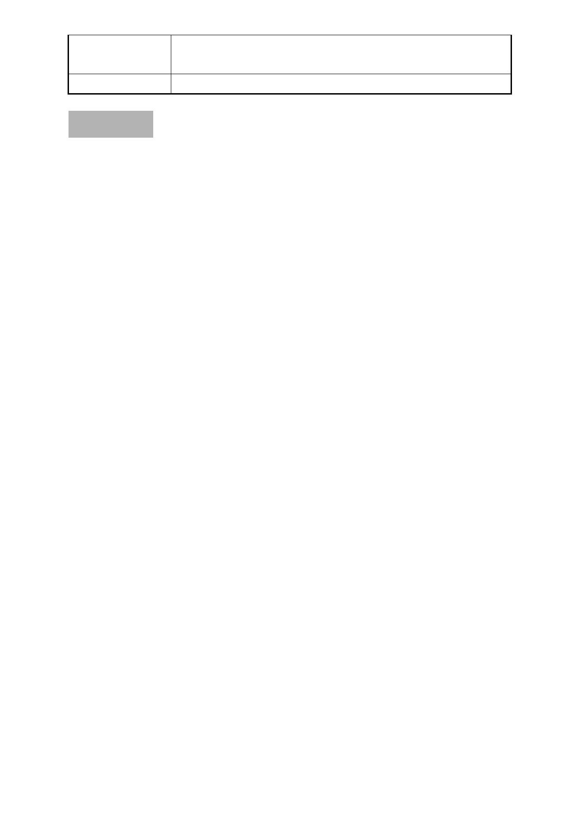

委員會決議
護，爰依都市計畫法第 27 條第 1 項第 4 款辦理本計
畫修訂，並非陳情人所述針對其個案所訂定。
依市府回應意見辦理。
討論事項 七
案名：申請撤回「變更臺北市士林區福林段三小段 236 地號等 19
筆土地為同小段 236 地號等 16 筆土地更新單元範圍案」
案情概要說明：
一、本更新單元位於臺北市中山北路五段以東、中山北路五段 756
巷及中山北路五段 740 巷之間所圍街廓內，計畫面積 1,832 平
方公尺。
二、本案更新單元土地使用分區為第三之ㄧ種住宅區，案前經市
府於 97 年 6 月 11 日公告劃定為更新單元，包含臺北市士林
區福林段三小段 236、237、243、244、245、246、247、248-1、
276、277、278、279、280、281、291、292、292-1、291-2、
290（292-1、291-2、290 為道路用地）地號等 19 筆土地，總
面積為 2,031 平方公尺。
三、茲因 98.6.30 台內營字第 0980100402 號函示，非屬更新單元
「周邊」公共設施，自無都市更新建築容積獎勵辦法第 5 條
之適用。故為保障有意願參與更新重建之所有權人之權益，
辦理變更劃定更新單元範圍。
四、變更計畫內容：計畫範圍排除福林段三小段 292-1、291-2、
290 地號 3 筆土地（面積 199 平方公尺）。。
五、本件係市府以 98 年 11 月 23 日府都新字第 09831448800 號函
送到會。
六、申請人：施蘇秀樁。
七、辦理單位：臺北市政府。
八、法令依據：都市計畫法第 66 條、都市更新條例第 5 條、第 6
條、第 8 條、第 11 條及臺北市都市更新自治條例第 15 條。
九、98.12.29 第 606 次委員會議決議：
本案暫予保留，請市府就變更更新單元範圍排除未開闢公共
- 14 -